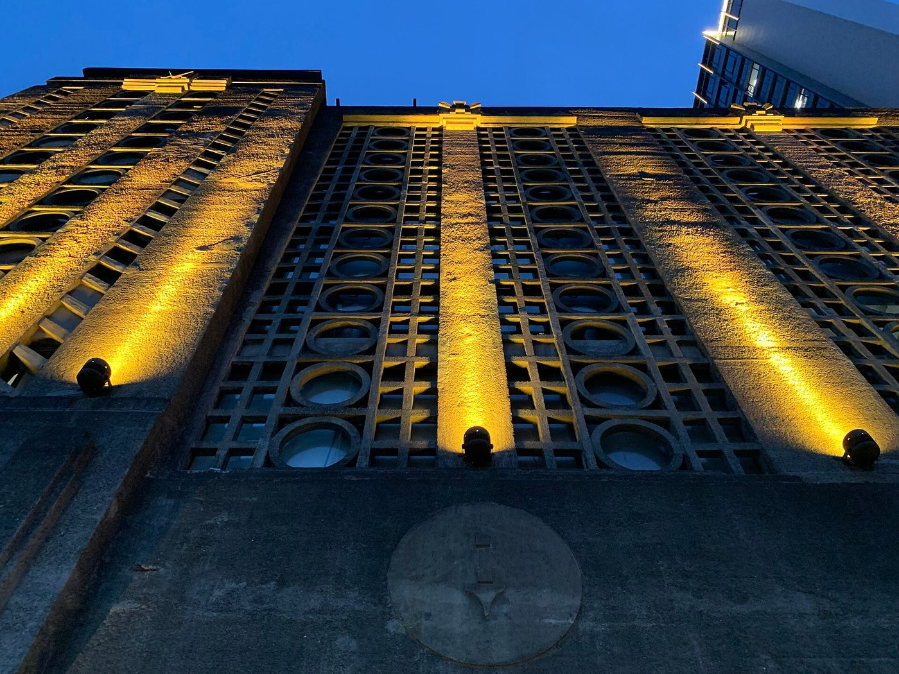
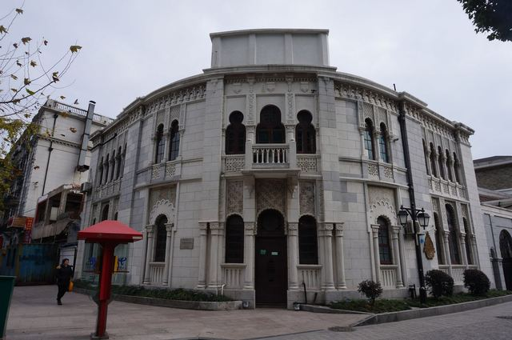
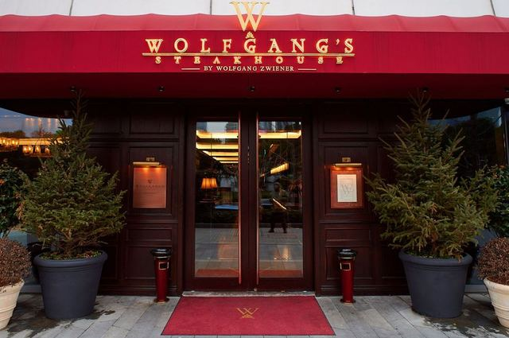

1933 Old Millfun 1933老场坊（上海工部局宰牲场旧址）
Former municipal slaughterhouse of 1933 · Hongkou
LikelyHours differ by source · 18 Nov 2026


Walk the concrete bridges of a 1933 slaughterhouse. Free; plan on 09:00-20:00, as sources differ.
Hours differ by source
The evidence for this one has a gap. Check on the day or call ahead.
Why it matters
The Shanghai Municipal Council, which ran the International Settlement, built it as a slaughterhouse to a design credited to the British designer Balfours with the Council's engineers. Planned from about 1931, it was finished in Nov 1933 and stopped production in 2002 (Shanghai SASAC). The city's tourism bureau says the only two other plants of this scale, in Britain and the United States, no longer stand.
What to see
Four floors of reinforced concrete form a square block around a round core, joined by 26 sloping bridges on the outer levels and 10 more inside. The bridges and ramps were the old routes for cattle and meat; units now hold studios, galleries and cafes, with a domed event space, the Sky Theatre, on the fourth floor.
How to get there
Show: 请带我去1933老场坊，溧阳路611号。 If the driver wants the building's own number, use 沙泾路10号 (10 Shajing Road). A Starbucks marks the front. No ticket office or bag check is reported.
Local tip
Go up first: the third and fourth floors are quieter than the lower ones (2020 listing).
Watch out
Exhibitions, drama, commercial events and weddings use the halls (The Paper, 25 Feb 2021), and the event calendar for the week is unknown. No lift or step-free route is confirmed.
What was checked, and what was not
Read on 18 Nov 2026
Sources read 18 Nov 2026: the city tourism bureau list of 17 Oct 2019 and State Council notice 国发〔2019〕22号 for the listing; Shanghai SASAC (11 Apr 2024) for history and structure; the city tourism site (17 Apr 2025) for hours; a blog (12 Aug 2026); OpenStreetMap.
Not checked
Current hours for 24 to 30 Nov; unit-level hours; the main gate on Liyang Road; a last-entry time; any bag check; whether the upper levels are open every day.
Sources
- Shanghai Municipal Culture and Tourism Bureau: Shanghai's 12 sites in the 8th national batch (17 Oct 2019)whlyj.sh.gov.cn Opens in a new tab
- State Council notice 国发〔2019〕22号, 8th batch of national key relics (dated 7 Oct 2019, published 16 Oct 2019)gov.cn Opens in a new tab
- Shanghai SASAC: 1933老场坊 under Jinjiang International (11 Apr 2024)gzw.sh.gov.cn Opens in a new tab
- Shanghai Tongzhiguan feature on The Paper (25 Feb 2021)m.thepaper.cn Opens in a new tab
- Shanghai culture and tourism promotion site: venue listing with hours (page dated 17 Apr 2025)meet-in-shanghai.net Opens in a new tab
- Third Eye travel blog: 1933 Old Millfun (12 Aug 2026)thirdeyetraveller.com Opens in a new tab
- The Paper, Shanghai housing commission account (30 Apr 2021)m.thepaper.cn Opens in a new tab
- Bendibao listing (published 18 Jul 2020)m.sh.bendibao.com Opens in a new tab
- Chinese Wikipedia: 1933老场坊zh.wikipedia.org Opens in a new tab
- OpenStreetMap: 1933 Old Millfun building (map position, house number)openstreetmap.org Opens in a new tab
- OpenStreetMap: Hailun Road station (Exit 2)openstreetmap.org Opens in a new tab
Nearby

